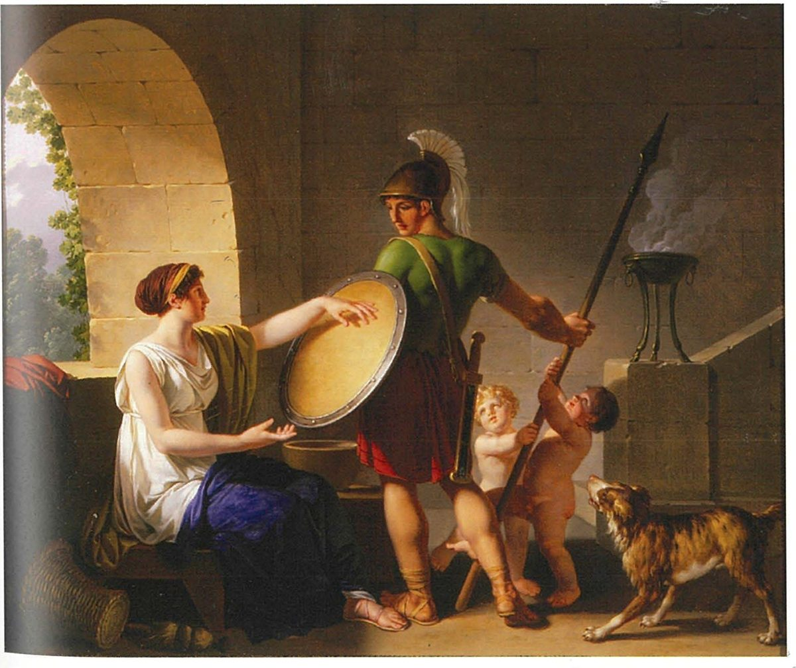

Spartan society to the Battle of Leuctra 371 BC · Lesson 27
Cultural and everyday life IV: marriage customs and the mirage
How did marriage serve the Spartan state — and how much of what we are told about it is the Spartan mirage?
Year 12 Ancient History · Section II, Option G · Present with → or space · Read on a phone with R

Spaced review · 6 minutes · from memory, no notes
Five questions
- 1What did the Damonon stele record?Lesson 26
- 2What does Tyrtaeus say happens to the man who dies standing firm?Lesson 26
- 3Who decided whom an heiress married if her father had not betrothed her?Lesson 14
- 4Why, according to Xenophon, did Lycurgus make girls exercise?A writer: Xenophon on marriage and children
- 5What is a dowry?A term
- Victories of Damonon (four-horse chariot and kalpe; foot-races as a boy) and of his son (foot-races and the horse-race) at local games in Laconia and Messenia, c. 400 BC — a date Cooley gives with a question mark (C83)
- His fame lives on: “Never does his good fame perish nor his name, / But though he is beneath the earth, he is immortal” (fr. 12, Cooley A9)
- Herodotus: “the kings decide who is entitled to marry her” (6.57, Cooley D8). Aristotle, a century later: “whoever he leaves as heir” (Cooley D54)
- For strong children, “in the belief that the offspring of two strong parents would be all the more robust” (Constitution 1.4, Cooley D68)
- Property given with a daughter when she married
Learning intentions and success criteria · 2 minutes
Today’s goals
- evaluate the reliability of the sources for Spartan marriage customs
- explain how marriage served the Spartan state
- describe the main marriage customs, with the source and date for each
- explain why Plutarch and Xenophon present marriage as they do
- judge which customs are best attested and which belong to the mirage
- write an evaluative paragraph on the sources for marriage
A source is reliable for a particular question, not reliable in general. Two sources corroborate each other when one confirms the other — and that counts for most when the two writers are independent and wrote for different purposes.
Note-making · today’s routine
How to structure your notes
questions and key terms
short phrases, arrows (→ led to), abbreviations (Plut. = Plutarch, Xen. = Xenophon)
- 1Listen and look firstDon’t copy while the slide is being explained.
- 2Write your own notes at each ✎ checkpointPhrases, not sentences. Put the writer and his date beside every custom.
- 3Compare with the model notesThey appear one row at a time. Add what you missed in a second colour.
- 4Copy each cue question into the left columnLater, cover your notes and answer the cue questions from memory.
- 5Finish with a three-sentence summaryFive checkpoints: Plutarch’s wedding · what Xenophon and Aristotle confirm · a king without an heir · what marriage was for · marriage and the mirage.
Key vocabulary
Words you will use today
| Marriage and the state | Meaning |
|---|---|
| bachelor | an unmarried man |
| procreation | producing children — the subject Xenophon says these laws were about |
| eugenics | improving a population by controlling who has children (Lesson 13) |
| dowry | property given with a daughter when she married (Lesson 14) |
| succession | who inherits the throne next |
| lineage | a family line, such as one of the two royal houses |
| Gymnopaedia | the summer festival of Apollo in the agora (Lesson 21) |
| Judging the sources | Meaning |
|---|---|
| reliability | how far a source can be trusted for a particular question |
| corroborate | to confirm what another source says |
| modality | words that show how certain a claim is: clearly · probably · may · suggests |
| mirage | the idealised, distorted image of Sparta created by writers (Lesson 1) |
| moral biography | a ‘Life’ written to teach good and bad character — Plutarch’s kind of writing |
| ‘Lycurgan’ | credited to Lycurgus — often a label given to a custom much later (Lesson 3) |
Spelling: Cooley’s translations use Greek forms (Lykourgos, Gymnopaidiai, Kleomenes, Demaratos, Lakedaimonians). In your own writing use Lycurgus, Gymnopaedia, Cleomenes, Demaratus and Lacedaemonians.
1 · Plutarch’s Spartan wedding · where we left off
Two things you already know
Cooley: the Spartan mirage is “a sum of stereotypes that came to dominate the Spartan image”, built up by outsiders and by Spartans themselves from the 5th century BC onwards.
Strong children for the state. Xenophon: men married “at the height of their physical powers”, and a husband could let another man father children. Plutarch: children were “the common property of the state”.
The customs themselves — the wedding, bachelors, fathers, a king’s second wife — and how far each one is evidence, and how far mirage.
1 · Plutarch’s Spartan wedding · I do — Source 13.7, Extract A, continued to 15.5
“A kind of kidnapping”
[3] Their marriages take the form of a kind of kidnapping. They carry off their wives, not when they are small and as yet unready for marriage, but when they are in the full flower of sexual maturity. Her so-called “bridesmaid” then takes charge of the “captive”, shaves her head close to the skin, dresses her in a man’s cloak and sandals, lays her on a bed of straw alone in the dark, without a light. Her bridegroom … having had dinner as usual at the mess, sneaks into her room … [4] He will not spend much time with her, but will then depart discreetly to his normal sleeping quarters to spend the night as usual among the other young men. This remains the normal practice subsequently: he spends his days and nights among his contemporaries, but visits his bride secretly and with the utmost care … [5] This normally went on for quite a long time, to the extent that some fathered children before they had even seen their wives in daylight. Such limitations to their sexual intercourse acted as a training in self control and moderation …
Plutarch, Life of Lykourgos 15.3–5 (part) · written c. AD 100 · a Greek biographer of the Roman period · trans. B. Wilson · Cooley D71
What happened at a Spartan wedding?
The groom “carried off” a grown woman; afterwards he went back to sleep among the young men and visited her in secret.
What was done to the bride — and does Plutarch say why?
Head shaved, a man’s cloak and sandals, alone on straw in the dark. He gives no reason for any of this.
Which custom does he explain?
Only the secret visits: “a training in self control and moderation”, and vigorous children.
Whose view is missing?
The bride’s. Every account of Spartan marriage was written by a man, and none by a Spartan woman.
1 · Plutarch’s Spartan wedding · I do — modelling evaluation
Weighing Plutarch

He wrote about AD 100: about 470 years after Leuctra, and nearly five centuries after Xenophon. Cooley: “much of his material also dates from after Sparta’s decline in the fourth century”.
Moral biography. Cooley: “his main aim was to draw characters which could be instructive as moral examples”, not historical analysis. So every custom becomes part of Lycurgus’ wise design.
By his day, Cooley says, “the Spartans tried to restore (or re-invent) their ancestral constitution”, and “many new ideas were presented as ancient”.
“Plutarch cites dozens of earlier works.” Where he agrees with Xenophon he may simply be following him — agreement is not always independent confirmation.
Plutarch preserves older material, but on his own he cannot show that a custom existed in classical Sparta. Cooley: anything “not explicitly identified as taken from a genuinely archaic or classical source should be considered as secondary material.”
Notes checkpoint 1 of 5
Plutarch’s Spartan wedding
Write your own notes first. Then compare, row by row, and add what you missed in a second colour.
2 · What earlier writers confirm · I do — corroboration
What does Xenophon corroborate?
[5] … He ordained that it was a disgrace for a man to be seen going into or leaving his wife’s room. With such constraints imposed upon their association, it was inevitable that the husband’s sexual desire would be all the greater, and any consequent children would be more vigorous than if their parents had had too much of one another. [6] As well as this, he also put an end to the practice of men marrying whenever they chose, and instead ordained that they should marry when at the height of their physical powers, on the assumption that this too was eugenically advantageous.
Xenophon, Constitution of the Lakedaimonians 1.5–6 · probably written in the late 390s or 380s BC · an Athenian admirer of Sparta with first-hand information · trans. B. Wilson · Cooley D68
… he must put up with a hearth and home without a wife beside him, and yet at the same time accept the standard fines for remaining a bachelor …
Xenophon, Constitution of the Lakedaimonians 9.5 · trans. B. Wilson · Cooley D96
- ✓men marry “at the height of their physical powers”
- ✓secret visits: a disgrace to be seen at the wife’s room
- ✓arrangements for another man to father children (1.7–9, Lesson 14)
- ✓bachelors fined — mentioned in passing
- ✗no ‘kidnapping’, no shaved head, cloak or straw bed
- ✗no naked march for bachelors
Cooley calls the Constitution “a kind of political pamphlet, defending Sparta against its critics” that “probably depicts a somewhat idealised Sparta”.
2 · What earlier writers confirm · marriage and the state
Bachelors and fathers
[15.1] … Lykourgos also ensured a degree of disgrace for those who did not marry. They were banned from being spectators at the Gymnopaidiai. In winter the magistrates would force them to march naked around the agora, [2] and as they marched they had to sing a song specifically written against themselves, to the effect that they were getting what they deserved for disobeying the laws.
Plutarch, Life of Lykourgos 15.1–2 (part) · written c. AD 100 · trans. B. Wilson · Cooley D71 (Source 13.7, Extract A)
For the lawgiver, wishing there to be as many Spartiates as possible, gives incentives for citizens to have as many children as possible: they have a law that a man who has had three sons should be exempt from military duty, and the father of four exempt from all taxation. However it is clear that if many sons are born, and the land divided accordingly, there will inevitably be many poor men.
Aristotle, Politics 2.9, 1270b · written 330s–320s BC · a critic of Sparta · trans. in Cooley D28
What did the state want from marriage — and which is the stronger evidence?
Children — above all sons, future citizens and soldiers. Bachelors were pushed to marry; fathers of several sons were rewarded.
Aristotle: he cites the law in order to attack it (“many poor men”), so he is unlikely to have invented it. The naked march is in Plutarch alone; Xenophon’s fines confirm only that bachelors were penalised somehow.
Cooley: “Spartan family law seems especially concerned with maintaining citizen numbers, which would suggest that manpower was already an issue in the Archaic period.”
Notes checkpoint 2 of 5
What Xenophon and Aristotle confirm
3 · A king without an heir · We do — Source 13.7, Extract B
A king without an heir
[39.2] … the ephors summoned him to appear before them and made the following declaration: “Even if you are indifferent to your own interests,” they said, “as far as we are concerned it is unacceptable that the lineage of Eurysthenes should die out. You may have a wife; but she has produced no children. Marry someone else. If you do, you will delight the Spartiates.” Anaxandridas replied that he would do no such thing; … [40.1] At that the ephors and members of the gerousia talked the matter over and brought Anaxandridas a new proposal. … [40.2] … you must marry a second woman as well, to produce children and guarantee the succession. Anaxandridas agreed to this suggestion and thereafter kept two wives and two separate households – a thoroughly un-Spartiate procedure.
Herodotus, Histories 5.39.2–40.2 (part) · events of about 550 BC · written c. 450s–420s BC · trans. B. Wilson · Cooley E8
Who acted first, and what did they demand?
The ephors: put away a childless wife and marry again. The king refused.
Who made the second proposal?
The ephors and members of the gerousia: keep her, but take a second wife too — and do as we say “so as to avoid some more serious action against you by the Spartiates”. He agreed.
Why did the state care?
The royal line: the Agiad house of Eurysthenes must not die out.
What does “un-Spartiate” suggest?
That normal Spartan marriage was to one wife: this was an exception, made for a king’s heir.
Check for understanding · gesture vote · hold up 1–4 fingers
Which statement does Herodotus’ story support?
- 1The ephors and the gerousia decided whom every Spartan king married.
- 2In one case, the ephors and the gerousia pressed a childless king to take a second wife.
- 3Spartan kings normally kept two wives in two households.
- 4The oracle at Delphi ordered Anaxandridas to marry again.
One case is not a rule (1); Herodotus calls two wives “a thoroughly un-Spartiate procedure” (3); no oracle is involved (4).
3 · A king without an heir · more royal marriages If time
Kings, heirs and a stolen bride
When Ariston was king in Sparta he had no children, despite the fact that he had married twice. [61.2] He refused to acknowledge that he might himself be the reason, and therefore married for the third time.
Herodotus, Histories 6.61.1–2 · Ariston, Eurypontid king c. 550–515 BC · trans. B. Wilson · Cooley E20
How he got his third wife — by tricking a friend into handing her over — is told in Herodotus 6.62, a passage left out of Cooley’s extract. Her son was Demaratus.
[65.2] … Leotychidas had been engaged to marry Perkalos, the daughter of Chilon, who was himself the son of Demarmenos. But by a bit of sharp practice Demaratos had carried her off and married her himself.
Herodotus, Histories 6.65.2 · Demaratus, king c. 515–491 BC · trans. B. Wilson · Cooley E20
Anaxandridas “had married his own niece” (Herodotus, Cooley E8). Cooley: such marriages “were inevitably conducted within the narrow constraints of Spartan society, often in the case of royal marriages within the family itself – so Leonidas married Gorgo, daughter of his half-brother (and former king)”.
The ephors heard Ariston say of the newborn Demaratus, “It can’t be mine”; years later Leotychidas called those ephors as witnesses when he challenged Demaratus’ right to be king.
Does “carried her off” prove Plutarch’s kidnapping?
No. Herodotus calls it “sharp practice” because she was already engaged to Leotychidas. ‘Carried her off’ may echo a wedding custom, but one royal case cannot show that every Spartan bride was ‘kidnapped’.
Notes checkpoint 3 of 5
A king without an heir
4 · What marriage was for · We do · 8 minutes · fill in the table
Custom → purpose
Type in the boxes (on a laptop or phone), or copy the table into your notes. Every row needs a source and its date.
| Custom | Purpose for the state | Source and date | Problem with the source |
|---|---|---|---|
| Marriage at maturity | |||
| The ‘kidnapping’ wedding | |||
| Secret visits | |||
| Penalties for bachelors | |||
| Rewards for fathers of sons | |||
| Sharing wives to father children | |||
| A childless king pressed to take a second wife |
Your typing stays in this browser on this device.
4 · What marriage was for · check — the completed table
Custom → purpose, completed
| Custom | Purpose for the state | Source and date | Problem with the source |
|---|---|---|---|
| Marriage at maturity | strong children: Xenophon calls it “eugenically advantageous” | Xenophon, LP 1.6 (prob. late 390s or 380s BC; D68) · Plutarch, Lyk. 15.3 (c. AD 100; D71) | Xenophon means the men’s age, Plutarch the brides’; women’s “late teens” is Cooley’s estimate (“probably”) |
| The ‘kidnapping’ wedding: shaved head, man’s cloak, straw bed | none given; brides taken “in the full flower of sexual maturity” — healthy births? | Plutarch, Lyk. 15.3 only (c. AD 100; D71) | one late writer, about 470 years after Leuctra; no classical writer describes a ‘kidnapping’ wedding |
| Secret visits | desire and “more vigorous” children (Xenophon); “a training in self control and moderation” (Plutarch) | Xenophon, LP 1.5 (D68) · Plutarch, Lyk. 15.4–5 (D71) | Xenophon gives the rule and a eugenic reason; the fuller story and the moral reason are Plutarch’s |
| Penalties for bachelors | push men to marry and father citizens | Xenophon, LP 9.5 (fines; D96) · Plutarch, Lyk. 15.1–2 (shaming; D71) | Xenophon mentions the fines only in passing; the naked march is in Plutarch alone |
| Rewards for fathers of sons | “as many Spartiates as possible” | Aristotle, Politics 1270b (330s–320s BC; D28) | one writer and no date for the law — but a critic attacking it is unlikely to have invented it |
| Sharing wives to father children | strong children; children “the common property of the state” (Plutarch) | Xenophon, LP 1.7–9 (D68) · Plutarch, Lyk. 15.6–8 (D71) | both present it as Lycurgus’ plan; Xenophon admits the result “is an open question for others to decide” |
| A childless king pressed to take a second wife | “to produce children and guarantee the succession” | Herodotus 5.39–40 (events c. 550 BC; written c. 450s–420s BC; E8) | one royal case; Herodotus calls it “a thoroughly un-Spartiate procedure” |
Notes checkpoint 4 of 5
What marriage was for
5 · Marriage and the mirage · I do — the evidence in time If time
Who says what about marriage — and when?
5 · Marriage and the mirage · I do — sorting the evidence
Best attested — and least secure
- the state’s interest in children — Xenophon (an admirer), Herodotus (an outsider) and Aristotle (a critic) all show it
- marriage at maturity (Xenophon for men, Plutarch for brides), secret visits, sharing wives, penalties for bachelors — in Xenophon and Plutarch
- rewards for fathers of sons — Aristotle alone, a critic unlikely to have invented it
- a king pressed to take a second wife — Herodotus alone, one case
- the ‘kidnapping’, the shaved head, the man’s cloak, the straw bed
- the bachelors’ naked march and song
- every moral reason: “a training in self control and moderation”
Who reports it, and when? Is it confirmed by a writer with a different purpose? Could the later writer simply be copying the earlier one?
5 · Marriage and the mirage · the mirage at work If time
“Good stories to pass on”
[9] These practices, sanctioned for the sake of good breeding and national eugenics, had so little to do with the later reputation of their women for sexual promiscuity that in those days adultery was totally unheard of there. [10] There is a good story told about Geradas, a very old fashioned sort of Spartiate, who was asked by a stranger what punishment was applied to adulterers in their country. … “He would be fined one enormous bull,” said Geradas, “so big that it could cover Mount Taygetos and drink from the river Eurotas.” … “Indeed,” laughed Geradas; “and how could there possibly be an adulterer in Sparta?”
Plutarch, Life of Lykourgos 15.9–10 (part) · written c. AD 100 · trans. B. Wilson · Cooley D71
When asked by his wife Gorgo, as he was setting out to fight the Persians at Thermopylai, if he had any orders for her, he said, “Marry good men and produce good children.”
Plutarch, Sayings of Lakedaimonians, Leonidas 2 · late 1st or early 2nd century AD, nearly six centuries after Thermopylae · trans. in Cooley F31
“Many traditions about Spartans were simply good stories to pass on”. Of the sayings: “We cannot know whether any of these are authentic, but together they can serve as a perfect illustration of the main themes of the Spartan ‘mirage’.”
Plutarch is answering a “later reputation” — the mirage had a hostile side too (Aristotle’s women who “live wantonly”, Lesson 14).
“Plutarch’s ‘kidnapping’ wedding was a real custom in classical Sparta.” Thumbs up · sideways · down — and give a reason.
5 · Marriage and the mirage · why each writer tells it his way
Purpose shapes each account
Every custom is Lycurgus’ plan for stronger children — yet he admits that whether it worked “is an open question for others to decide” (1.10).Cooley: “a kind of political pamphlet, defending Sparta against its critics”
Every custom has a moral reason, and he concludes that “in those days adultery was totally unheard of there”.Cooley: “his main aim was to draw characters which could be instructive as moral examples”
He reports the law on fathers only to criticise it: “there will inevitably be many poor men”.Cooley: “He offers valuable criticism of the Spartan system, informed by Sparta’s decline in the fourth century.”
A royal scandal, not a law — probably from informants we cannot check, but his “un-Spartiate” suggests he knew the normal practice.Cooley, on his claims to Spartan sources: “we have no way of telling how much of this information is indeed authentic”
So: the customs can be checked against each other; the explanations are where each writer’s purpose — and the mirage — shows most.
Check for understanding · Quick Check · cold call
Quick Check: marriage customs and the mirage
- Describe three Spartan marriage customs and give the source for each. Men married “at the height of their physical powers” (Xenophon, Constitution 1.6, Cooley D68); it was a disgrace to be seen going into the wife’s room, so husbands visited in secret (Xenophon 1.5; Plutarch, Lykourgos 15.4–5, D71); the wedding was “a kind of kidnapping”, the bride’s head shaved and a man’s cloak put on her (Plutarch 15.3 only).
- How did the state reward fathers and punish bachelors? A father of three sons was exempt from military duty and of four from all taxation (Aristotle, Politics 1270b, D28). Bachelors paid “the standard fines” (Xenophon 9.5, D96) and, Plutarch says, were banned from watching the Gymnopaedia, marched naked round the agora in winter singing a song against themselves, and lost the respect of the young (15.1–2).
- Which custom is best attested, and which is least secure? Explain why. Best attested: the state’s interest in producing children, and the customs both Xenophon (early 4th century BC, first-hand) and Plutarch report. Least secure: the ‘kidnapping’ wedding — only Plutarch, writing about AD 100 to teach moral lessons, describes it, and no classical writer confirms it.
Notes checkpoint 5 of 5
Marriage and the mirage
5 · Marriage and the mirage · You do · 20 minutes · Chapter 13 Activity D, in five moves · press K for the timer
Evaluate the reliability of Plutarch and Xenophon as evidence for Spartan marriage customs.
“Xenophon is probably the more reliable witness for … because … . However, … . Plutarch’s account of … is less secure, because … . Therefore …”
Assess how far Spartan marriage customs are ‘mirage’: which details are best and worst attested?
Check · peer check, then cold call · 5 minutes
Swap paragraphs with a partner
the judgement sentence
every modal word: probably, may, suggests
each move you can find: Judge · Evidence · Analyse · Evaluate · Resolve
Cold call: three judgements, read aloud. Does each one say which writer, for which customs?
5 · Marriage and the mirage · a model paragraph written for this lesson, annotated
Five moves, one paragraph
Model written for this lesson · about 200 words
The five moves
Finish your notes
Summary: three sentences
- How did marriage serve the Spartan state?
- Which customs does only Plutarch describe, and how does he explain them?
- How far is the evidence for Spartan marriage the mirage?
Spartan marriage was the state’s business: Xenophon, Aristotle and Herodotus show rules and pressures meant to produce children, from marriage at the height of men’s physical powers and penalties for bachelors to rewards for fathers of sons and, in one royal case, a second wife to secure the succession. Plutarch, writing about AD 100, adds the most vivid customs — the ‘kidnapping’ wedding, the shaved head and man’s cloak — and explains every custom as part of Lycurgus’ wise design. The state’s interest in children is well attested by writers with different purposes, but the details found only in Plutarch, and every writer’s explanations, are where the mirage is strongest.
6 · Answering HSC questions
No past paper has asked about marriage alone
2019 Q10(c): “Marriage, fertility, procreation, parenthood”. 2020 Q11(b): “Marriage customs, such as bride-kidnapping (Plutarch) and wife-sharing for reproduction (Xenophon).”
“To what extent …” questions about sources appear elsewhere in the paper — for example 2020 Question 3 (8 marks), on the core topic.
Section II: 25 marks in about 45 minutes — about 1.8 minutes a mark, so about 14 minutes.
One question written for this lesson: take it apart, plan it, write it, then compare with an annotated model.
HSC-style, written for this lesson · Section II · 8 marks
To what extent do the sources for Spartan marriage customs reflect the Spartan mirage? Support your response using evidence from relevant sources.
Not from a past paper. We do: take it apart and plan it together · You do: write it in 14 minutes.
HSC-style · We do — deconstruct the question
What the question is really asking
Not one of the glossary’s key words: NESA’s glossary notes that questions “will continue to incorporate self-explanatory terms like ‘how,’ ‘why,’ or ‘to what extent.’” It asks for a judgement of degree — how far, not yes or no — as “Assess” does: “Make a judgement of value, quality, outcomes, results or size.”
Judge the writers, not just the customs: Plutarch, Xenophon, Aristotle, Herodotus. The mirage is “a sum of stereotypes that came to dominate the Spartan image” (Cooley): idealised, distorted, often late.
Named, dated writers and short quotations — and the gap between the period (to 371 BC) and when each wrote.
About 14 minutes · a judgement of degree in your first sentence · three or more named writers · what is mirage and what is not · about 250–360 words.
HSC-style · NESA’s criteria and feedback for a question of the same type
What the markers reward
| Marks | Criteria (2020 Question 3, 8 marks) |
|---|---|
| 7–8 | Provides a reasoned judgement about the extent to which the given sources help historians to understand the roles of slaves and freedmen in Pompeii and Herculaneum · Supports the response using evidence from the sources provided and refers to other relevant source(s) · Communicates ideas and information using appropriate historical terms and concepts |
| 5–6 | Provides some judgement on the extent to which the given sources help historians to understand the roles of slaves and/or freedmen in Pompeii and/or Herculaneum · Refers to the sources provided and other source(s) · Communicates using some historical terms and concepts |
| 3–4 | Demonstrates some knowledge and/or understanding of sources or slaves/freedmen in Pompeii and/or Herculaneum · May refer to the sources provided · May use some historical terms and/or concepts |
provide a sustained judgement about the extent that the given sources could help historiansshow that there are limitations regarding the two sources for the groups represented
ensuring that a judgement about the sources is provided if asked in the question instead of explaining the roles slaves and freedmen played in the society.
A reasoned judgement about how far the marriage sources reflect the mirage; evidence from named writers; terms such as mirage, corroborate, reliability. Judge the sources — don’t just describe the customs.
Source: NESA, 2020 HSC Ancient History Marking Guidelines, Question 3 (Section I, Cities of Vesuvius), and the 2020 marking feedback for Question 3 — a different question of the same type, quoted exactly. Our question has no sources printed with it, so “the sources provided” becomes the sources you know.
HSC-style · We do — a plan in four moves
One judgement, four moves
| Move | Point | Evidence | → How far it is mirage |
|---|---|---|---|
| 1 · Judgement | To a large extent in the vivid details and in every writer’s explanations; much less in the core — that Sparta made marriage the state’s business. | ||
| 2 · Most mirage | the ‘kidnapping’ wedding; moral reasons; “adultery … unheard of” | Plutarch, Lyk. 15.3–10 (c. AD 100) · Cooley on his late material and moral aim | one late writer and one wise lawgiver: idealisation |
| 3 · Least mirage | rules for marriage; bachelors; fathers; a king pressed for an heir | Xenophon, LP 1.5–6, 9.5 · Aristotle, Pol. 1270b · Herodotus 5.39–40 | earlier writers with different purposes agree on the state’s interest |
| 4 · Evaluate, resolve | even the best witness idealises | Xenophon 1.10 (“an open question”) · Cooley: “Were the rules really ever as rigid as the sources suggest?” | the mirage lies in the explanations and the unique details |
Close by returning to the judgement — sharper than you began.
HSC-style · You do · 14 minutes · press K for the timer
To what extent do the sources for Spartan marriage customs reflect the Spartan mirage? Support your response using evidence from relevant sources. (8 marks)
- a judgement of degree in your first sentence
- at least three named writers, each with a date
- what is mirage — and what is not
- a limit on even your best witness
- about 250–360 words
Start: “The sources for Spartan marriage reflect the mirage to a large extent in …, but much less in …”
HSC-style · annotated model written for this lesson · paragraph 1 of 2
Answer first, then where the mirage is strongest
Model written for this lesson · paragraph 1 of 2
Marker’s margin
HSC-style · annotated model written for this lesson · paragraph 2 of 2
Then where it is weakest — and a sharper judgement
Model written for this lesson · both paragraphs ≈ 360 words, about 14 minutes
Marker’s margin
HSC-style · three answers that fall short
Why answers drop marks
Spartan weddings were like a kidnapping: the bride’s head was shaved and she wore a man’s cloak. Bachelors had to march naked around the agora, and fathers of three sons did not have to fight …
Knowledge, but no judgement about the sources — the 2020 markers’ area to improve: “a judgement about the sources … instead of explaining the roles”.
Plutarch wrote hundreds of years later and admired Lycurgus, so everything we are told about Spartan marriage is the mirage and none of it can be trusted.
A judgement, but one-sided and thinly supported: it names only Plutarch and ignores Xenophon, Aristotle and Herodotus, who confirm the state’s interest. “Some judgement”, not “a reasoned judgement”.
Xenophon proves the kidnapping was real, because he also says husbands visited their wives secretly, and Herodotus says the ephors and gerousia chose every king’s wife.
Secret visits do not confirm a kidnapping wedding, and Herodotus describes one exceptional case, not a rule.
Written for this lesson to show the marking criteria — not real student answers.
HSC-style · Self-mark
Mark your own answer
Fewer than five ticks? Add the missing move in a second colour.
Read only your first and last sentences. Do they say how far the sources reflect the mirage, and where?
Outline the main Spartan marriage customs in this period. (4 marks)
How useful is Plutarch for understanding Spartan marriage customs? (6 marks)
Practice and review · 1 of 6 · sequencing · Chapter 13 Activity A
Put these in chronological order — and date each
- APausanias describes the throne of Apollo at Amyklai.
- BTyrtaeus composes a poem refusing to honour men for running or wrestling.
- CCynisca wins the four-horse chariot race at Olympia.
- DThe throne of Apollo is built at Amyklai.
- EPlutarch writes his Life of Lycurgus.
- FA Laconian workshop paints the Arkesilas cup.
- GHerodotus writes about King Anaxandridas and his two wives.
B (mid-7th century BC) → F (c. 565–560 BC) → D (late 6th century BC) → G (c. 450s–420s BC) → C (396 or 392 BC) → E (c. AD 100) → A (2nd century AD)
Practice and review · 2 of 6 · true, false, justify
True or false? Justify with a source
- 1Aristotle says the father of three sons was exempt from military duty. True — “a man who has had three sons should be exempt from military duty, and the father of four exempt from all taxation” (Politics 1270b, Cooley D28).
- 2Xenophon describes the Spartan wedding as a kind of kidnapping. False — only Plutarch does (Lykourgos 15.3, D71). Xenophon says only that it was a disgrace to be seen going into or leaving the wife’s room (1.5).
- 3Herodotus says the ephors and the gerousia decided whom every Spartan king married. False — he reports one case: they pressed the childless Anaxandridas to take a second wife, and he calls the result “a thoroughly un-Spartiate procedure” (5.39–40, E8).
- 4Plutarch says unmarried men were banned from watching the Gymnopaedia. True — “They were banned from being spectators at the Gymnopaidiai” (15.1, D71).
- 5Plutarch explains the bride’s shaved head and man’s cloak as a training in self-control. False — he gives no reason for them; “a training in self control and moderation” is his reason for the secret visits (15.5).
- 6Xenophon is sure that Lycurgus’ rules produced stronger children. False — whether they did “is an open question for others to decide” (1.10, D68).
- 7Cooley thinks Spartan women probably married later than most other Greek girls. True — “probably married later than most girls elsewhere in Greece (late teens, rather than early/mid teens)”.
- 8Aristotle praises the law that rewarded fathers of many sons. False — he says that if many sons are born “there will inevitably be many poor men” (D28).
Practice and review · 3 of 6 · cloze
Fill the gaps
- Plutarch says Spartan marriages took the form of a kind of kidnapping.
- Xenophon says it was a disgrace for a man to be seen going into or leaving his wife’s room.
- Xenophon says men should marry at the height of their physical powers.
- Plutarch calls the secret visits a training in self-control and moderation.
- Aristotle says a father of three sons was exempt from military duty.
- The ephors and gerousia wanted Anaxandridas to produce children and guarantee the succession.
- Anaxandridas kept two wives and two separate households.
- The idealised, distorted image of Sparta created by writers is called the Spartan mirage.
Practice and review · 4 of 6 · write an analytical paragraph
How useful is Herodotus’ story of King Anaxandridas for understanding Spartan marriage?
Herodotus’ story of Anaxandridas is useful evidence that a king’s marriage was the state’s business, but much less useful for ordinary Spartan marriage. Writing in the 5th century BC, a century or more after the events of about 550 BC, he reports that the ephors and the gerousia pressed the childless king to take a second wife ‘to produce children and guarantee the succession’, and that they warned him to comply ‘so as to avoid some more serious action against you by the Spartiates’. This shows Spartan officials putting the royal line before a king’s wishes, which fits the interest in children that Xenophon and Aristotle describe for citizens. Yet it is a single, exceptional case about a king, and Cooley notes that Herodotus ‘appears consistently to underestimate Kleomenes’, the son of this second marriage, perhaps because of hostile informants. Herodotus himself calls the arrangement ‘a thoroughly un-Spartiate procedure’, so the story is most useful for what it implies about the norm: Spartans married one wife at a time, and only the survival of a royal house justified an exception.
Practice and review · 5 of 6 · extended response · Chapter 13 Activity E · HSC-style, written for the chapter
To what extent does the evidence for Spartan cultural and everyday life support the image of an austere, military society? (15 marks)
Use evidence from relevant sources. Plan it in four moves:
- Thesis: how far, and for which period? For example: the image fits some later evidence, but Archaic art, festivals and leisure overturn it, and much of the austere picture is late.
- Art and architecture: ivories found at Orthia (7th century BC), small bronzes, Laconian black-figure cups; Cavanagh: “the skill and grace of these artefacts serve to undermine the notion of a grim austerity”; modest temples (Orthia about 16 × 7 m) against the late-6th-century throne of Apollo; the debate about why display art declined.
- Poetry and leisure: Tyrtaeus (courage above running and wrestling) against Alcman (beauty, choruses, a prayer for marriage); hunting as training (Xenophon) against chariot-racing as a display of wealth (Damonon; Cynisca, 396 or 392 BC).
- Marriage: customs that served the state (Xenophon, Aristotle, Herodotus) weighed against the mirage (Plutarch, c. AD 100). Conclude: austere in its ideals, perhaps, but not in all its practice — Cooley asks, “Were the rules really ever as rigid as the sources suggest?”
Practice and review · 6 of 6 · Chapter 13 review, questions 1–4
Chapter review: cultural and everyday life (1)
- Describe one example each of Spartan sculpture, painted pottery and ivory or bone carving. Sculpture: stone hero reliefs such as the Chrysapha relief (c. 540 BC: an enthroned pair, a snake, small worshippers) — free-standing statues of young men and women “are not attested” (Cavanagh); or small bronzes such as the bronze girl of 520–500 BC, who “may be running or … dancing” (D64). Painted pottery: Laconian black-figure, such as the Arkesilas cup (c. 565–560 BC), with King Arkesilas of Cyrene watching goods being weighed. Ivory: a 7th-century lion, 7.5 cm long, found at the Sanctuary of Artemis Orthia; the raw ivory had to be imported.
- Why does Cavanagh say Archaic Laconian art undermines the notion of a grim austerity? Because of the quality of the work: “Already the Spartans avoid excessive monumentality at home, but the skill and grace of these artefacts serve to undermine the notion of a grim austerity.” Fine ivories, bronzes, painted pottery and temple roof ornaments whose style “was imitated widely in the Peloponnese” show wealth and taste.
- Explain two interpretations of the decline of Laconian display art. Some argue it marks “the onset of Spartan austerity” — a change in Spartan society in the later Archaic period (Hodkinson accepts a change, but not a permanent one: “Already by the later fifth century Sparta was being transformed back into a plutocratic society”). Others argue the Spartans “were no different from other contemporaries elsewhere in the Peloponnese”, so the decline “does not reflect a political or social reform”. Cavanagh: “These and other debates continue.”
- Describe the location, deity and key features of Orthia, the Menelaion and the Amyklaion. Artemis Orthia: beside the Eurotas at Limnai; an altar and a temple rebuilt several times, the Archaic temple only about 16 × 7 m; rich votives of ivory and lead. The Menelaion: Menelaus and Helen, at Therapne on high ground east of the Eurotas, “A few miles south-east of Sparta” (Cooley); a shrine of c. 700 BC beside Mycenaean remains, a stepped stone platform, offerings naming the couple. The Amyklaion: Apollo and Hyacinthus, about 5–6 km south of Sparta; home of the Hyakinthia; the late-6th-century throne of Apollo, known mainly from Pausanias.
Practice and review · 6 of 6 · Chapter 13 review, questions 5–8
Chapter review: cultural and everyday life (2)
- Compare the purposes and audiences of Tyrtaeus and Alcman. Tyrtaeus (mid-7th century BC, probably Spartan) wrote elegies to rally Spartans at war; his songs were later sung on campaign after dinner, for a prize (Philochoros, Cooley A2). Alcman (late 7th century BC, probably Spartan) wrote lyric songs in Sparta’s Doric dialect for choruses of girls at festivals, on beauty, rivalry, piety and marriage. Both were “writing poetry not history” (Cooley).
- Explain three Spartan leisure activities, with evidence for each. Athletics: Thucydides says “The Lakedaimonians were the first to strip naked, to take off their clothes in public and rub themselves with oil after exercising” (1.6.5, C42). Horse-racing: Sparta’s best event became the one for which “great wealth is a prerequisite” (Cooley); the Damonon stele (c. 400 BC?) records local victories, and Cynisca won at Olympia in 396 or 392 BC. Hunting: “Lykourgos established hunting as the most honourable activity, unless prevented by official obligations” (Xenophon, Constitution 4.7, D79), to keep older men fit for war.
- Explain how Spartan marriage customs served the state. They were meant to produce strong children, especially sons for the army: men married “at the height of their physical powers” (Xenophon); bachelors were fined and shamed (Xenophon; Plutarch); fathers of three sons were exempt from military duty (Aristotle); husbands could agree to let another man father children; and the ephors and gerousia pressed one childless king to take a second wife for the succession (Herodotus). Cooley: family law “seems especially concerned with maintaining citizen numbers”.
- Evaluate how far Spartan marriage customs belong to the Spartan mirage. Partly. The state’s interest in children is confirmed by writers with different purposes — Xenophon an admirer, Aristotle a critic, Herodotus an outsider. But the most vivid customs — the ‘kidnapping’, the shaved head and man’s cloak — and every moral explanation come from Plutarch alone, about AD 100, who claims “in those days adultery was totally unheard of there”. The mirage lies mostly in the explanations and the late details.
Exit ticket · before you leave · 2 minutes
One custom, its purpose — and how reliable the evidence for it is
One custom · what it was for · who reports it, when, and how far you trust him.
Who says Spartan marriages took “the form of a kind of kidnapping”? A Xenophon · B Herodotus · C Plutarch
Next lesson: decline and defeat at Leuctra, 371 BC. Aristotle complained that rewarding fathers of many sons only multiplied poor men — next lesson asks how a shrinking citizen body left Sparta unable to recover.
Sources and credits
Where everything comes from
Quoted from the translations in M. G. L. Cooley (ed.), Sparta, LACTOR Sourcebooks in Ancient History 21, 2nd edn (Cambridge University Press, 2023): Plutarch, Lykourgos 15 (D71, trans. B. Wilson); Plutarch, Sayings of Lakedaimonians, Leonidas 2 (F31); Xenophon, Constitution of the Lakedaimonians 1.4–10, 4.7 and 9.5 (D68, D79, D96, trans. B. Wilson); Herodotus 5.39–41, 6.57, 6.61 and 6.63–66 (E8, D8, E20, trans. B. Wilson; 6.62 paraphrased); Thucydides 1.6.5 (C42, trans. B. Wilson); Aristotle, Politics 1269b–1270b (D69, D54, D28); Tyrtaeus fr. 12 and Alcman fr. 4A (A9, A17, trans. K. Hughes); Philochoros in Athenaios (A2); the Damonon stele (C83). Introductions and notes by M. G. L. Cooley (the literary sources, the Spartan mirage, Lykourgos, women, oliganthropia, King Kleomenes, Spartan women in Section E), W. G. Cavanagh (Lakonian archaeology) and S. Hodkinson (inscriptions; his conclusion on property and wealth, as quoted by Cooley).
NSW Education Standards Authority: 2019 and 2020 HSC Ancient History marking guidelines (2019 Question 10 (c); 2020 Questions 3 and 11 (b)); 2020 marking feedback (Questions 3 and 11); glossary of key words (“Assess”, “Evaluate” and its note on self-explanatory terms). © NESA. The 8-mark question in section 6 is written for this lesson.
- A modern painting: Le Barbier’s early 19th-century picture of a Spartan woman handing her son his shield — the ‘with it or on it’ story, not ancient evidence — Clarke & Garner, Fig 5.3
- A stone bust commonly believed to represent Plutarch — Clarke & Garner, Fig 1.10
Books: Clarke & Garner, Spartan society textbook (school copy).
Textbook images are reproduced for teaching, with the source given under each one. The custom → purpose table and the timeline were drawn for this lesson.